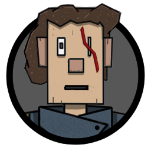
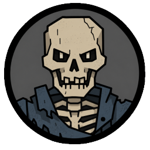

A village survival roguelike
One more month.
At any cost.
A hard season has settled over the roads. Lead a fragile village through difficult months, impossible choices, and the consequences that follow.
The premise
When the world narrows,
every decision echoes.
Bleak Roads: One More Month is a turn-based survival experience about keeping a settlement alive when certainty is gone. Each month asks you to assess what remains, choose what matters, and face whatever is waiting beyond the village.
Build what endures
A village is more than its walls.
Shape the place people return to. Tend to the practical needs of a community while its future remains uncertain.
Your choices carry forward.
Beyond the gate
The road always
asks a price.


02 / ONE MORE MONTH
“Survival is not a victory.
It is a promise to try again.”
The dispatch
Keep a light
in the window.
Bleak Roads is in active development. Follow along for new glimpses of the village, the road, and the stories taking shape between them.
Join the communityScan to open Discord